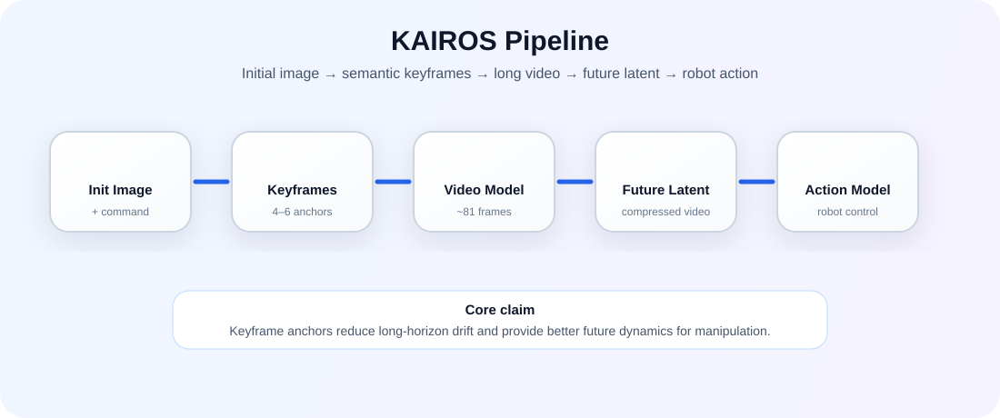

We generate semantic keyframes as long-horizon anchors, synthesize stable robot videos between them, and use the resulting future video latents to guide action prediction.

Long-horizon robot manipulation is difficult for visual world models because prediction errors accumulate when the model repeatedly predicts only very short clips. KAIROS studies a keyframe-guided alternative: instead of directly predicting an entire manipulation trajectory as one unstable video, the task is divided into semantic stages. An image model generates task-relevant keyframes such as contact, partial progress, regrasp, and final state. A video model then generates approximately fixed-length clips between neighboring keyframes, where the robot motion is more uniform and easier to model.
The generated videos are used not only for visualization, but also as future signals for action learning. A compact video latent from the current frame to the next keyframe can condition an action model, allowing the policy to use predicted future dynamics as structured guidance.
Semantic keyframes provide anchors; video generation fills the motion between anchors; action prediction uses the future latent.
Raw demonstrations are divided by meaningful task stages so that each video interval has more uniform robot motion.
An image model predicts multiple task-relevant future keyframes instead of only one final goal image.
A video model generates longer clips between neighboring keyframes, reducing drift compared with repeated short predictions.
Multiple camera views can constrain the predicted geometry and improve spatial consistency for manipulation.
Fine-grained progress variables can represent intermediate object states, such as partial drawer or door opening.
The action model can use video latents from the current frame to the next keyframe as a compact future-conditioning signal.
KAIROS is designed for tasks where two keyframes are sometimes enough, but more complex tasks require additional anchors. For example, opening a cabinet may require grasping the handle, partially opening the door, releasing, moving inside, pushing, and reaching the final open state.
Initial scene and robot state.
Robot reaches the relevant interaction part.
Object changes state in a controlled intermediate step.
Final task-complete object state.
Example manipulation videos showing keyframe-guided future imagination and robot manipulation rollouts.
@misc{khoshnazar2026kairos,
title = {KAIROS: Keyframe-Aligned Long-Horizon Video Imagination for Robot Manipulation},
author = {Khoshnazar, Mohammad and Gao, Zhiyuan and Melnik, Andrew and Beetz, Michael},
year = {2026},
url = {https://kairos-manipulation.github.io/kairos-manipulation/}
}